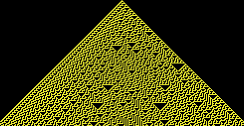
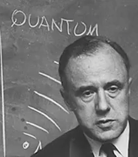

Cellar Automata
No Label
John von Neumann
Manhattan Project
Hungarian-American Mathematician
No Label
Stainslay Ulam
Polish-American Mathematician
Manhattan Project
No Label
Stephen Wolfram
Mathematica & New Kind of Science
behaviours
Cass 1 - fixed points
Class 2 -alternation
Class 3 - randomness
Class 4 - complexity
No Label

simple rules combine to form anything
1D cellular automata
each row is state following clock tick and rules have been applied
No Label

John Wheeler
"It from Bit"
Universe is information-theoretic
American Theoretical Physicist
Manhattan Project
No Label
Chris Langton
Langton's Lambda
https://web.eecs.utk.edu/~mclennan/Classes/420-594-F04/handouts/Lecture-04.pdf
artifical life
complexity & randomness require interdependency